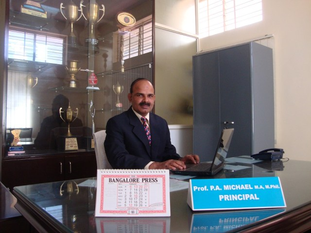

Vidyavahini college was founded in 1995 with an aim to equip the young men and women with quality education. A benevolent Management, highly committed Staff and disciplined Youngsters have contributed to maintain the high standards and excellence. It owes all credit to its founder Shri R. Krishnappa.
To be a leader in transforming lives through an innovative, rigorous, and compassionate approach to education. The mission of the Vidyavahini First Grade College is to prepare individuals to be highly qualified professionals who challenge the status quo and exemplify our core values.
Vidyavahini college is one of the leading institutions imparting education at the Degree level. There are innumerable novel programs designed to help generations and enrich knowledge and strengthen their skills to match the pace of the world. The college has excelled both in academics and co-curricular activities.
Vidyavahini First Grade College, an institution for people from diverse cultures, religions, different economic backgrounds, languages and regions. We started in 1995 with an intention of providing good education with a holistic approach and affordable fee for the students coming from Ganganagar and RT Nagar areas. Initially, we had only the B.A Stream. Today we are offering B.Com, BBA & BCA Courses as well and we have students from all corners of India, seeking a space where they can learn from the eminent faculty while involving in a challenging curriculum and contemporary methods in education. Our students have consistently excelled in Academics as well as Sports and Extra-curricular activities. Vidyavahini First Grade College has a dynamic learning atmosphere focusing on an enriching student experience. We do not deny admission on the basis of scores. We accept students with just a pass percentage and believe in shaping and moulding them into brilliant graduates, passing with flying colors. The dedicated and qualified faculty, have consistently contributed to the excellent results year on year. Our ex-students have ventured into different fields and have successful careers in Business, Education, Cinema, Sports etc… We believe in tolerance and respect for all, irrespective of religion, language and culture. A healthy mind has a healthy body; keeping this in mind we provide meditation sessions to help our staff & students to overcome the emotional & psychological challenges
The modern world has just unfolded the IT revolution. Computers are to the springboard for all inventions henceforth, be it artificial intelligence, bio-informatics, embedded technology etc. ITs expertise and domain knowledge are critically interdependent. Career in IT is wide-spread and relevant in this technological advancement. The B.C.A was conceptualized to cater to the needs of the IT world.
The Department Of Commerce and Managements is the largest in the college in terms of student and staff strength. the avowed aim of the department is to “train and develop young management proffesionals who can take on the challenges of the corporate world”. The course has a wide variety of subjects to bring you face-to-face with trends in business and management. commerce graduates are sought after by business, trade and industry. if you have a penchant for a higher qualification, there are many postgraduate courses available. trends.
The Primary Objective of Business Administration programme is to provide a high quality professional education in business for young men and women who wish to Join Junior executive positions in industry, business and non-profit organisations and To seek entrepreneurial or self employment position. The Course aims at developing the knowledge and perceptive skills among to expose the candidate to economic, in which business functions.
B.A course offers you an understanding of the traditional but socially ever relevant, humanities. The study of history aims to create awareness about the present and aspire for the future through a conscious study and the part. the study of economy will provide you with understanding about fiscal administration, budgeting, planning and others economic activities on political science , you will come face to face with the political development is the contemporary world the study of Kannada, Hindi, Urdu, English literature will not only enhance your literacy, creative 7 critical acumen, but also keep you abreast with the local culture & literacy will not only enhance your literacy, creative and critical acumen but also keep you abreast with the local cultural and trends Academic wires we have humanities club. Where we conduct awareness program about the scope in humanities stream. We also conduct coaching classes for civil service exams and various other competitive exams. Our department also conduct soft skills classes to help our students to blend into works field. We organise lots of seminars in the collage to enrich their knowledge, we also send them to various collages to actively participate in various conferences.